HTML: Introduction
- HTML documents are plain-text (also known as ASCII) files that can be created using any text editor.
- HTML documents are often created using WYSIWYG editors (e.g., Microsoft FrontPage).
- However, it is often
necessary to hand code HTML features that the editors don't support or
support incorrectly!!!
- HTML documents all have the
.html or .htm
extension (document.html).
- HTML document names should be a single word (no spaces)
- The default file on most systems is called "
index.html". This file is
shown when no file is specified for a given directory.
HTML Tags
- Elements are the fundamental components of text documents.
- eg. sections, tables, paragraphs, and lists.
- To denote the various elements in an HTML document, you use tags of the
form:
<ELEMENT ATTRIBUTE=value>...</ELEMENT>
- The
Element tells what the tag is in a general way, and the
Attribute
describes the tag more specifically.
- Tags are usually paired (e.g.,
<H1> and </H1>) to start and end the tag instruction.
The Minimal HTML Document
- Every HTML document should contain certain standard HTML tags. Each document consists of
head and body text.
- The
head contains the title, and other information not actually displayed by the browser.
- The
title is displayed in the title bar of the browser window.
It is what is displayed on someone's hotlist or bookmark list &
is used to identify your page for search engines, so choose something descriptive, unique, and relatively short.
- The
body contains the actual text that is made up of paragraphs, lists, and other elements.
<html>
<head>
<title>This is a test html page</title>
</head>
<body>
<p>This is a test html page.</p>
<p>It has 3 paragraphs.</p>
<p>This is the last one.</p>
</body>
</html>
- The required elements are the
<html>, <head>,
<title>, and <body> tags (and their corresponding end tags).
Markup Tags
Headings
- HTML has six levels of headings, numbered 1 through 6, with 1 being the
largest.
- The 6 headings are shown below:
|
<H1> |
Heading 1 |
|
<H2> |
Heading 2 |
|
<H3> |
Heading 3 |
|
<H4> |
Heading 4 |
|
<H5> |
Heading 5 |
|
<H6> |
Heading 6 |
- Good Practice: Use sequential levels of headings in your document. For example,
if you start with
a level-one heading (
<H1>), next use a level-two
(<H2>) heading.
Paragraphs
- Unlike documents in most word processors, carriage returns in HTML files aren't significant.
- Any amount of whitespace (spaces, linefeeds, etc.) are compressed into a single space when your HTML document is displayed in a
browser.
- For example the following 2 HTML paragraphs would all display the same way:
|
<P>A very short paragraph! </P>
|
A very short paragraph! |
|
<P>A very
short paragraph! </P>
|
A very
short paragraph! |
- In the source file there is a line break between the sentences.
A Web browser ignores this line break and starts a new paragraph only when it encounters
another
<P> tag.
- NOTE: The
</P> closing tag may be omitted. However, it's generally
a good idea to include it.
- Important: You must indicate paragraphs with
<P> elements.
A browser ignores any indentations or blank lines in the source text. Without
<P> elements, the document becomes one large paragraph.
HTML: Lists
Unordered & Ordered Lists
- To make an unnumbered, bulleted list,
- start with an opening list
<UL> (for unnumbered list) tag.
- enter the
<LI> (list item) tag followed by the individual item;
- A closing
</LI> tag is needed in XHTML, in HTML it
is only needed when non bulleted text is to be inserted in the bulleted list.
- end the entire list with a closing list
</UL> tag.
<LI> items can contain multiple paragraphs.
- A numbered list (also called an ordered list) is identical to an unnumbered list, except it uses
<OL> instead of <UL>.
- The items are tagged using the same
<LI> tag.
- Nested Lists: Lists can be nested. You can also have a number of paragraphs, each containing a nested list, in a single list
item:
<UL><LI>Northern states:</LI>
<OL>
<LI> Vermont</LI>
<LI> New Hampshire</LI>
<LI> Maine</LI>
</OL>
<LI>Western states:</LI>
<OL>
<LI>Arizona</LI>
<LI>Colorado</LI>
</OL>
</UL>
The nested list is displayed as:
- Northern states:
- Vermont
- New Hampshire
- Maine
- Western states:
- Arizona
- Colorado
Definition Lists
- A definition list (coded as
<DL>) usually consists of alternating a definition term (coded as
<DT>) and a definition description (coded as <DD>). Web browsers generally format the definition on a new line and indent it.
The following is an example of a definition list:
<DL>
<DT>HTML
<DD>Hypertext Mark-up Language</DD>
<DT>HTML
<DD>Hypertext Transfer Protocol</DD>
</DL>
The output looks like:
- HTML
- Hypertext Mark-up Language
- HTTP
- Hypertext Transfer Protocol
Character Formatting
- HTML has two types of styles for individual words or sentences: logical and
physical.
- Logical styles tag text according to its meaning,
- Physical styles indicate the specific appearance of a section.
- Common Logical Styles:
<EM>
- for emphasis. Typically displayed in italics.(Consultants cannot reset your
password unless you call the help line.)
<STRONG>
- for strong emphasis. Typically displayed in bold. (NOTE: Always check your links.)
- Common Physical Styles:
<B>
- bold text (This is bold)
<I>
- italic text (This is italics)
<TT>
- typewriter text, e.g. fixed-width font. (This is typewriter text)
Escape Sequences (a.k.a. Character Entities)
- The <, > and & characters are special characters in HTML,
so to have them appear in an HTML document, you must enter an escape sequence:
-
<
- the escape sequence for <
>
- the escape sequence for >
&
- the escape sequence for &
- to force an additional space to appear in the HTML document
NOTE: Unlike the rest of HTML, the escape sequences are case sensitive. You cannot, for
instance, use < instead of <.
Miscellaneous Formatting
Forced Line Breaks
- The
<BR> or <BR/> tag forces a line break with no extra (white) space between lines.
- Using
<P> for short lines of text results in unwanted additional white space.
<p>University of Colorado at Denver<BR>
1250 14th Street<BR/>
Denver, CO 80217</p>
results in:
University of Colorado at Denver
1250 14th Street
Denver, CO 80217
Extended Quotations
- Use the
<BLOCKQUOTE> tag to include lengthy quotations in a separate block on the
screen.
<BLOCKQUOTE>
<P>To read between the lines was easier than to follow the text.</P>
<P>--Henry James </P>
</BLOCKQUOTE>
results in:
To read between the lines was easier than to follow the text.
--Henry James
Horizontal Rules
- The
<HR> or <HR/> tag produces a horizontal line the width of the browser window.
- You can vary a rule's size (thickness) and width (the percentage of the window covered by
the rule).
<HR SIZE=4 WIDTH="50%">
displays as:
In Class Assignment
- To get some practice using HTML Tags we are going to create a Simple HTML
homepage. It should have:
- Opening and closing
<html>,
<head> and <body> tags for an HTML
document.
- A
<title> in the <head> of
the document
- Your Name as a heading in the body of the document (
<h1>,
<h2> etc)
- Write a paragraph describing, yourself, some interest you have, why
you are taking this class - (or anything else).
Linking
- The chief power of HTML comes from its ability to link text and/or an image to another
document or section of a document.
- HTML's link tag is
<A>, which stands for anchor:
<A HREF="Test.html">Test link</A>
- This makes Test link a hypertext link to
Test.html, which is
a file in the same directory as
this document.
Relative Pathnames
- You can link to documents in other directories by specifying the relative path from the
current document to the linked document.
- For example, a link to a file "test2.html" located in the subdirectory
"junk" would be:
<A HREF="demo/test2.html">test2.html</A>
- To specify a file in the parent directory you use a ".." in the
pathname (
../some_file.html).
- Good Practice: You should design your Web site using
relative path links so that no matter where you move your Web pages (e.g.
from your home computer to a Web server) the links will still
work!!!!!!!!!!!
Absolute Pathnames
- You can also use the absolute pathname (the
complete URL) of the file (e.g. to link to the
CU Denver's Main Page).
<A HREF="http://www.cudenver.edu">
CU Denver's Main Page </A>
- Only use Absolute pathnames when you are linking to a document outside you "personal" Web space.
File Links
- Occasionally when defining a link using an HTML editor (like FrontPage)
the computer will create a File link instead of an HTTP link. A file
link points to a specific location on your personal computer:
<A HREF="file:///C:/Data/myfile.html"> file link</A>
- You NEVER want to have a file link in an HTML file you put on the
Web because a person browsing your Web page will not have the file on
their hard drive creating a "broken link".
Mailto Links
Links to Specific Sections
- Named anchors (called targets or bookmarks) allow linking to a particular section in a document
rather than to the top.
- Include the
<A NAME="name"> tag at the place in your document where you want the link to jump to
<A NAME="jump"></a>Jump
Here
<A HREF="#jump">Link to above text</a>
<A HREF="../../ismg4800.html#descript"></a>
Web Site Design Principles
-
Design for the Medium, remember the destination is a computer not the printed
page. Research indicates that users read hypertext very differently than
printed information.
-
Design for the whole site not just individual pages. Your choices of
colors, fonts, graphics and page layout should communicate a visual theme that
orients users to your site's content.
-
Design for the User and only include content on your site that is of direct
benefit for your intended audience. Give away something valuable: information, software,
advice or humor. Create an interface that will be
familiar and easy to use.
Plan the Overall Site
Plan for a successful implementation
- Creating portable file naming conventions.
- Build a relative file structure
that can be transferred to your Web server without a hitch.
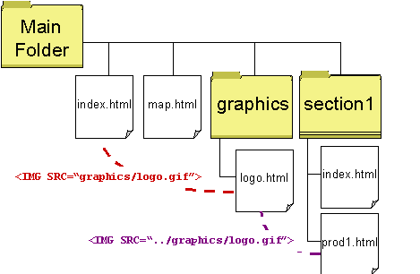
- When linking to documents in your own Web site you should always specify the relative path from the
current document to the linked document:
- In the example above a link found in the site map "
map.html" to a file "prod1.html" located in the subdirectory
"section1" would be:
<A HREF="section1/prod1.html">Product
Information </A>
- To link to the site map from the
prod1.html page you would
use:
<A HREF="../map.html">Site Map</A>
- If you forget and use absolute paths specific to your development machine:
<A HREF="File:///C:/My Webs/section1/prod1.html">Product
Information </A>
OR
<A HREF="http://localhost/section1/prod1.html">Product
Information</A>
Your links will not work when you transfer your files up to the Web
server!!!!
Select a basic information structure for your site
- Manually
diagram your site based on "Standardized" site plans then
customize to develop the best structure for your site.
- Linear Information Structure: Lets you guide your user along a path.
Good for books or sequential presentations:
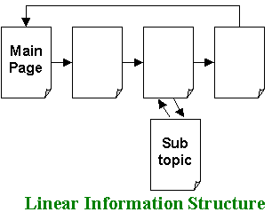
- Tutorial Structure: Similar to linear structure except there are several
predefined paths the user can travel.
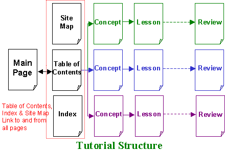
- Web Structure: A content structure used by
smaller sites which provides links to every page on the site. This
type of structure requires clear navigation information.
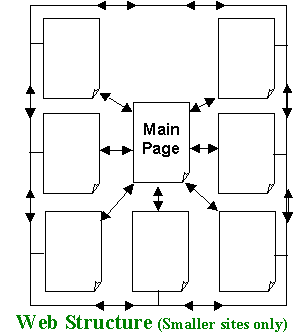
- Hierarchical Structure: One of the most common.
It lends itself to large content collections because the Section pages
break-up and organize the content at different levels.
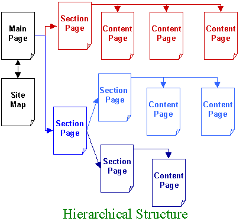
- Cluster Structure: Similar to hierarchical except
each section is an island of information organized in a Web structure.
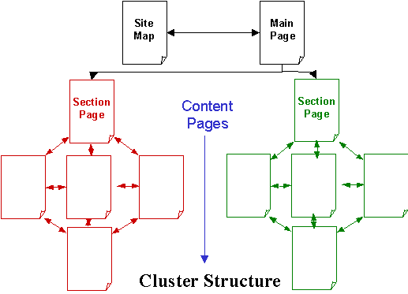
- Catalog Structure: Accommodates electronic
shopping. Users browse or search for items and add them to their
shopping cart, they can review the items in their cart then checkout.
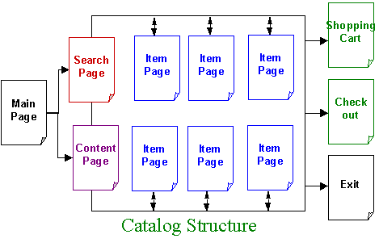
Planning Site Navigation
- Work from the users point of view. Think about where the user wants
to go within your Web site and make it easy for them to get there.
- Add plenty of links to make your Web site quickly accessible. Link to
internal bookmarks/targets as well as to whole pages.
- Provide plenty of location cues to let users know where they are within
your site:
- Yahoo has a complicated directory structure. They use text based
links to let you know
where you are and how you got there:
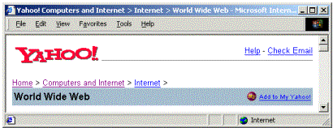
- Amazon.com clearly indicates that you are browsing Books in
the subject for Computers and the Internet. They also give
clear links back to other parts of the Books site and the whole site.
- Use consistent text based navigation bars to link users
to other pages on your site. Use other text based links to help users
move through a long page of information or through a Table of Contents.
- If you use graphical navigation links:
- Reuse the same images to reduce download
time.
- Use the ALT attribute to provide alternative navigation
options for users.
- Have a consistent text only link/navigation bar at the bottom of every
page.
Home|Notes|Syllabus|Glossary|Links
- Keep a flat hierarchy: Do no make users navigate through to many layers to
find the information they want.
- Consider providing a site map that graphically shows Users the lay-out of
your entire site:
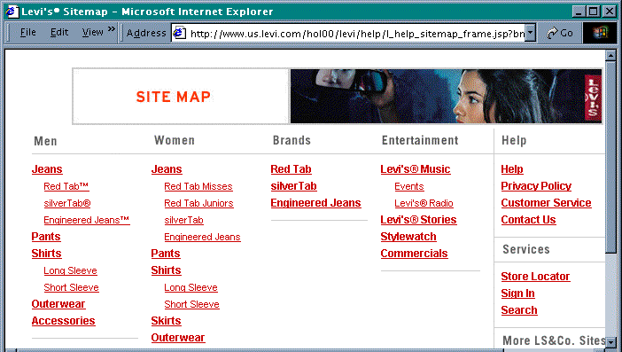
Design for the Medium
Craft the look and feel
- Make your site consistent and easy to use.
- Better sites support the way users want to approach the
problems. (Research
shows users will leave sites that have unique designs or terminology).
- Content design requires that the Web designer determines
the best approach to describing each unit of information.
- Use a standardized Information architecture. An example
that has already happened is the "About the company" area
of most corporate Web sites.
Make your Design Portable
- To be successful, you Web design must be portable and accessible across
different browsers, operating systems and computing platforms.
Design for Low Bandwidth
- Plan your pages so they are accessible at a variety of connection
speeds.
- Break large pages into smaller units.
- Use fewer graphics
- Use the ALT attribute with your images so that the user has
information to look at while the graphics are downloading.
Plan for clear presentation & easy access to information
- Highlight keywords (hypertext links serve as one form of
highlighting; typeface variations and color are others)
- Use meaningful sub-headings (not "clever" ones)
- Use bulleted lists
- Only one idea per paragraph (users will usually skip over any additional
ideas)
- Start with the conclusion, then add details.
- Have half the word count (or less) than print writing
- Limit the number of fonts and colors used on the site.
Use the Power of Hypertext Linking
- When writing on the Web you have the power to put
hypertext
links anywhere in your document to guide users through you information.
- Provide links anywhere you think it will help end-users find the
information they want more quickly.
- Provide links that will allow users to jump through a long document
quickly (see my syllabus)
- Rem
Go to Top
Plan the Page Structure & Content
- The final step is defining the unifying themes and structure that will
hold your pages together. This includes:
- Choices of colors, fonts and graphics
- Page Layout
- How much content to include
Create Smooth Transitions
- Plan to create a unified look among the sections and pages of your
site. Web sites should have:
- Consistent background graphics
- Consistent placement of navigation information
- Consistent font usage
- Logo that brands the site
- The two screen shots below show the unified look of the National Gallery
of Art's Web site:
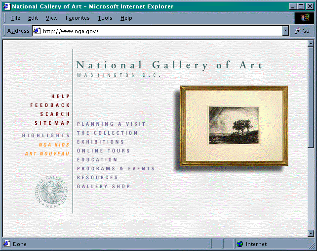
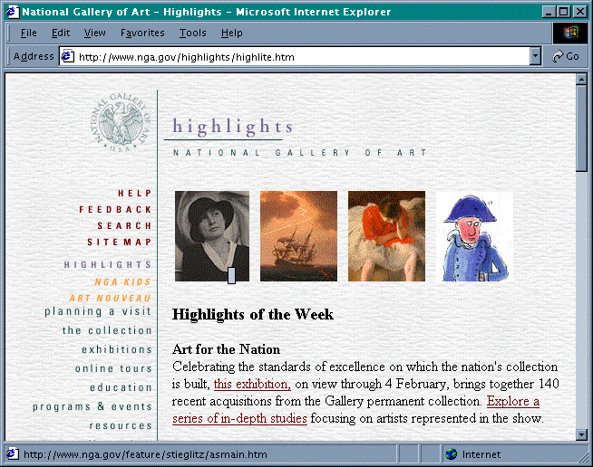
Use a grid to Provide Visual Structure
- The structure of a Web page is imposed by the grid or page template you
choose for your Web page design.
- Most web pages use tables to lay content out in logical areas.
- Tables are also used to create active white space. White space
between content areas to guide readers attention to important content
(space between each of the cells in the table).
Top Banner or Logo Space:
Relative Screen Importance=2 |
Navigation
Link
Space
Importance
5
|
Main Content Area |
Search
Link
Space
Importance
3 |
Can be in a single block |
or in multiple grids |
|
Importance
1 |
|
Bottom Navigation Link Space
Importance
4
|
Choose the Amount & Location of Content
- You can only crowd so much information onto a single Web page.
Consider the type of site and the information the user is looking for when
deciding what information to include on a single Web page.
- Most sites try to have Web pages that are no more than 2 browser height's
high with the most important information "above the fold" (on the
first screen).
- The AltaVista page below is an Search/Information page and attempts to
crowd a lot of information on a single page with little Active White Space:
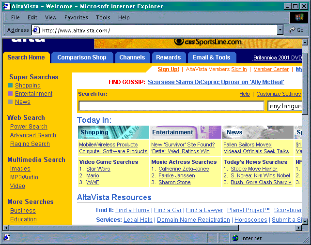
- The Web site for Eddie Bauer has navigation information
and links on the home page with a large image in the main content area to
highlight their products. It has a much less cluttered feel.
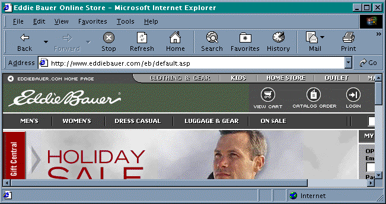
Proper Coding
-
HTML is not case sensitive so
<p> and <P>
are interpreted the same way by the browser. However it makes your code
easier to read if you choose to use either all UPPERCASE tags or all lowercase
tags.
-
Avoid Overlapping Tags
<B>This is an example of <I>overlapping</B>
HTML tags.</I><B>This would be a <I>better</I></B>
<I>way to code it.</I>- Close more more recent tags before closing a tag that comes before it.
-
Embed Only Anchors and Character Tags
-
HTML protocol allows you to embed links within other HTML tags:
<H1><A HREF="../links.html">Links</A></H1>
-
Do not embed HTML tags within an anchor:
<A HREF="../links.html"><H1>Links</H1></A>
-
Although most browsers currently handle this second example, the official HTML specifications do not support this
and your file may not work with future
browsers.
Readability
- Place comments throughout your HTML File.
- Comments have the starting and ending tags:
<!-- The comment is here -->
- Put headings on separate lines,
- Use a blank line or two where it helps identify the start of a new section, and
- Separate paragraphs with blank lines (in addition to the
<P> tags).
- For Example:
<head>
<title>This is a formatted html page</title>
</head>
<body>
<!-- Course Description -->
<h1>ISMG 4800 - Web Authoring</h1>
<p>This class is designed to give students
familiarity with current Web technologies and
the ability to use them!</p>
<p>By the end of the class students should be
able to design complex web sites that have
database connectivity and use cookies.</p>
<!-- Page Footer -->
<hr>
<p>Updated 12/6/01 by Dawn Gregg</p>
</body>
</html>
Final Steps
Validate Your Code
-
When you put a document on a Web server, be sure to check the formatting and links
(including named anchors).
- Check from a different computer than you created the file on to catch file
link errors.
- You can run your coded files through one of several on-line HTML/XHTML validation services that
will tell you if your code conforms to accepted HTML.
Browsers Differ
-
Web browsers display HTML elements differently. Remember that not all codes used in
HTML files are interpreted by all browsers. Any code a browser does not understand is
usually ignored.
- You could spend a lot of time making your file "look perfect" using your current browser. If
you check that file using another browser, it will likely display (a little or a lot) differently.